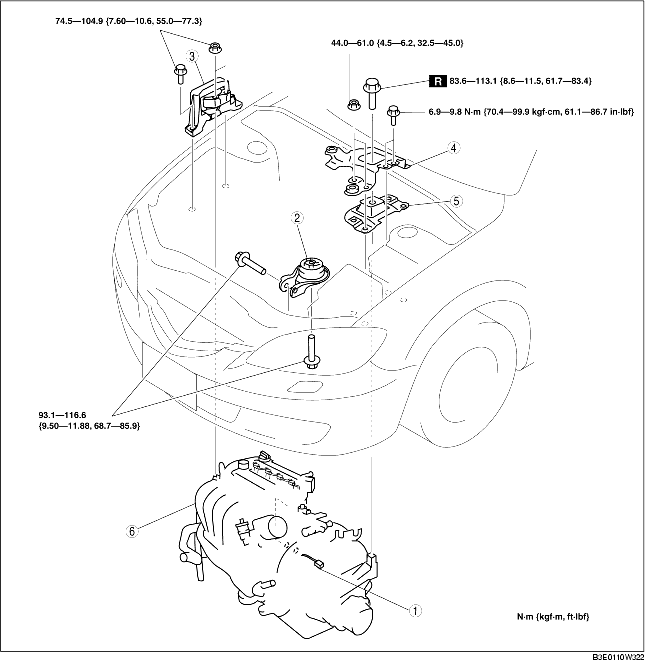

ENGINE REMOVAL/INSTALLATION [LF]
B3E011001001W04
-
Warning
-
• Fuel vapor is hazardous. It can very easily ignite, causing serious injury and damage. Always keep sparks and flames away from fuel.
-
• Fuel line spills and leakage are dangerous. Fuel can ignite and cause serious injuries or death and damage. Fuel can also irritate skin and eyes. To prevent this, always complete the "Fuel Line Safety Procedure". (See Fuel Line Safety Procedure.)
1. Remove the plug hole plate. (See PLUG HOLE PLATE REMOVAL/INSTALLATION [LF].)
2. Remove the air hose and air cleaner component. (See INTAKE-AIR SYSTEM REMOVAL/INSTALLATION [LF].)
3. Remove the battery cover, battery duct, battery clamp, battery and battery tray. (See BATTERY REMOVAL/INSTALLATION [LF].)
4. Disconnect the fuel hose. (See QUICK RELEASE CONNECTOR REMOVAL/INSTALLATION [ZJ, Z6, LF].)
5. Remove the following parts.
-
(1) Accelerator cable and bracket
-
(2) Front wheels and tires (See GENERAL PROCEDURES (SUSPENSION).)
-
(3) Under cover and splash shields
-
(4) A/C drive belt (See DRIVE BELT REPLACEMENT [LF].)
-
(5) A/C compressor with the pipes still connected
-
Note
-
• Secure the A/C compressor using wire or rope so that it is out of the way.
6. Drain the ATF (ATX) or transaxle oil (MTX) (See TRANSAXLE OIL REPLACEMENT [F35M-R].) (See AUTOMATIC TRANSAXLE FLUID (ATF) REPLACEMENT.)
7. Drain the engine coolant (See ENGINE COOLANT REPLACEMENT.)
8. Disconnect the brake vacuum hose.
9. Remove the following parts.
-
(1) Member (See EXHAUST SYSTEM REMOVAL/INSTALLATION [LF].)
-
(2) Front crossmember, front stabilizer, lower arm, steering gear and No.1 engine mount rubber component (See STEERING GEAR AND LINKAGE REMOVAL/INSTALLATION.)
-
(3) Drive shafts (See DRIVE SHAFT REMOVAL/INSTALLATION.)
-
(4) Coolant reserve tank with the hose still connected
-
(5) Cooling fan component (See RADIATOR REMOVAL/INSTALLATION.)
-
(6) ATF hose, selector cable and wiring harness (ATX) (See AUTOMATIC TRANSAXLE REMOVAL/INSTALLATION [LF].)
-
(7) Shift cable (MTX) (See MANUAL TRANSAXLE REMOVAL/INSTALLATION [G35M-R].)
-
(8) Clutch release cylinder with the pipe still connected (MTX) (See CLUTCH RELEASE CYLINDER REMOVAL/INSTALLATION.)
10. Disconnect the heater hose.
11. Disconnect the Upper and lower radiator hose.
12. Disconnect the Main silencer (See EXHAUST SYSTEM REMOVAL/INSTALLATION [LF].)
13. Remove in the order indicated in the table.
14. Install in the reverse order of removal.
-
Caution
-
• Do not tighten the No.1 engine mount rubber installation bolt before tightening the No.3 engine mount rubber installation bolt. (See No.3 Engine Mount and No.4 Engine Mount Rubber Installation Note.)
15. Start the engine. And inspect and adjust them if necessary.
16. Inspect the following and adjust them if necessary.
-
• Front wheel alignment (See FRONT WHEEL ALIGNMENT.)
-
• Puller and belt for runout and contact.
-
• Leakage of engine oil, engine coolant, MT oil, and fuel.
-
• Ignition timing and idle speed, and amount of CO, HC. (See ENGINE TUNE-UP [LF].)
-
• Engine-driven accessories operation.
-
Note
-
• If the engine is overhauled and installed to the vehicle, perform the road test and verify that there is no abnormality.

|
1
|
Main fuse block connector
|
|
2
|
No.1 engine mount rubber
|
|
3
|
No.3 Engine mount
|
|
4
|
Battery bracket
|
|
5
|
No.4 Engine mount rubber
|
|
6
|
Engine, transaxle
|
Main Fuse Block Connector Removal Note
1. Release the tab in the order shown in the figure.
2. Pull the lock lever up and remove the connector.
No.3 Engine Mount and No.4 Engine Mount Rubber Removal Note
1. Secure the engine and the transaxle using an engine jack and attachment as shown in the figure.
No.3 Engine Mount and No.4 Engine Mount Rubber Installation Note
1. Secure the engine and the transaxle using an engine jack and attachment as shown in the figure.
2. Install the No.1 engine mount rubber and No.4 engine mount rubber.
-
Note
-
• Do not tighten the bolt and nut for the No.1 engine mount rubber and No.4 engine mount rubber during this step.
3. Tighten the new No.4 engine mount rubber installation bolt as shown in the figure.
-
Tightening torque
-
83.6-113.1 N·m
-
{8.6-11.5 kgf·m, 61.7-83.4 ft·lbf}
4. Tighten the No.4 engine mount rubber and battery bracket bolts and nuts in the order as shown in the figure.
-
Tightening torque
-
(1) 44.0-61.0 N·m
-
{4.5-6.2 kgf·m, 32.5-44.9 ft·lbf}
-
(2) 6.9-9.8 N·m
-
{70.4-99.9 kgf·cm, 61.1-86.7 in·lbf}
5. Tighten the No.3 engine mount bracket stud bolts.
-
Tightening torque
-
7.0-13 N·m
-
{71.4-132.5 kgf·cm, 62.0-115.0 in·lbf}
6. Tighten the No.3 engine joint bracket bolts and nuts in the order as shown in the figure.
-
Tightening torque
-
74.5-104.9 N·m
-
{7.60-10.6 kgf·m, 55.0-77.3 ft·lbf}
No.1 Engine Mount Rubber Installation Note
1. Remove the engine jack and attachment.
2. Tighten the No.1 engine mount rubber installation bolts as shown in the figure.
-
Tightening torque
-
93.1-116.6 N·m
-
{9.50-11.88 kgf·m, 68.7-85.9 ft·lbf}